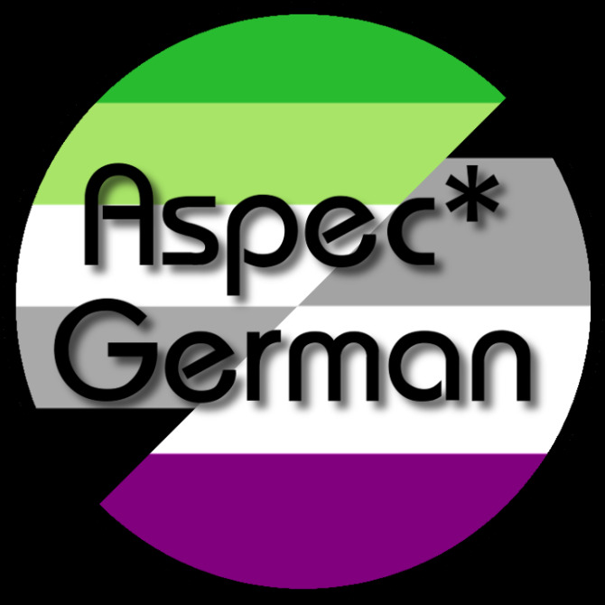

Hey!
Wir sind Aspec*German, eine kleine Discord-Oase für Menschen auf den Spektren der Asexualität, Aromantik und/oder Aplatonik. Außerdem sind natürlich Menschen willkommen, die gerade ihre Identität auf diesen Spektren hinterfragen, und solche, die sich mit uns als Allies verbunden fühlen.
Auf unserem Server bieten wir die Möglichkeit, sich über u.a. diese
Themen sowie Gender, Memes, Beziehungen und weiteres auszutauschen und
Ressourcen zu finden bzw. zu teilen.
Alle zwei Wochen organisieren wir Treffen, die in den Sprachchats
stattfinden.
Regionalgruppen haben hier auch ihren Platz und halten ihre Treffen
bei uns ab.
Wie wird mensch Teil des Aspec*German Servers? Ganz einfach:
- Entweder Discord für dein Betriebssystem herunterladen oder über deinen Browser nutzen
- einen Account anlegen (sofern nicht schon vorhanden)
- danach unserer Oase über folgenden Einladungscode in Discord beitreten: HnkcTgX
Wir freuen uns immer, neue Leute begrüßen zu können!!